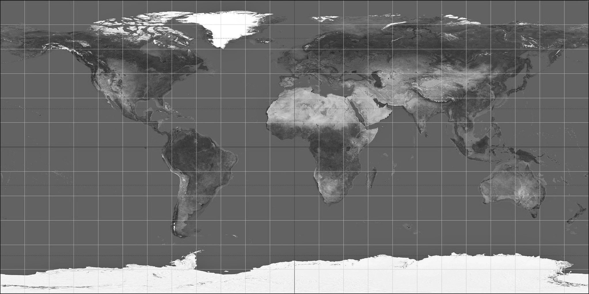

Space Junk
Solar System Objects Rendered To Scale
- Celestial Body Name: planet1
- Radius (in km):
- Orbits Around: parentorbit
- Gravity in m*s² (if known): gravity
- Mass: mass
- Is this a planet: bool
- Celestial Body Name: planet1
- Radius:
- Orbits Around: parentorbit
- Gravity in m*s² (if known): gravity
- Mass: mass
- Is this a planet: bool
scale: 1px = 1 km
Random 'Astronomy Picture of the Day'
ISS Live Position Tracker

LATITUDE:
LONGITUDE:
VELOCITY:
ALTITUDE: